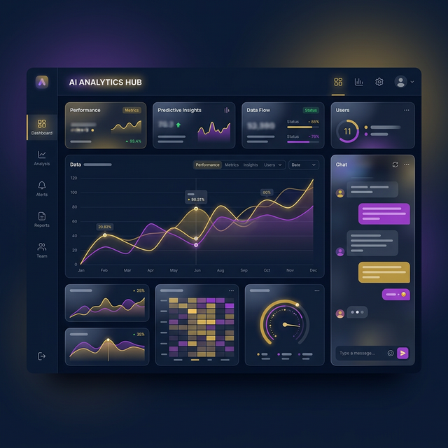

Entrepreneurship · Digital Products · 2026
تأسيس وتطوير أفكار ونماذج تشغيل الشركات الناشئة لخدمة قطاع الخدمات اللوجستية والتمويل الاستثماري في مصر والشرق الأوسط.

01 · المشكلة والفرص السوقية
من خلال قراءة واقع السوق المصري والعربي، تم تحديد فجوتين رئيسيتين في قطاعات الأعمال:
02 · الحلول ونماذج العمل المبتكرة
شارك أحمد عصام كـ Co-Founder ومطور استراتيجي في هيكلة وبناء المفهوم التشغيلي لهذين المشروعين:
حل تكنولوجي متكامل يهدف لربط (المطاعم والصيدليات والمتاجر) بأفضل سائقي التوصيل المتاحين جغرافياً.
بوابة ربط واستكشاف مالي تعمل كحلقة وصل تفاعلية بين المستثمرين الملائكيين ومؤسسي المشاريع الناشئة.
03 · الفلسفة الريادية
تعكس هذه المشاريع عقلية أحمد عصام في تحويل المشاكل التشغيلية المعقدة في السوق المصري والشرق الأوسط إلى فرص استثمارية وتطويرية قابلة للتوسع، مع الاستعانة الدائمة بالذكاء الاصطناعي كركيزة أساسية لخفض التكاليف ورفع الإنتاجية.